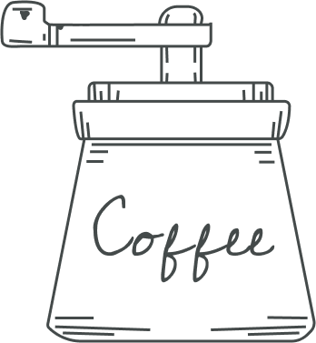

- Drink coffee, enjoy with Samwyle
- Coffee Shop
- Order here

- About us
- Coffee Shop Samwayle
- Only one moment - when the barista reaches out over the bar to transfer the cup to the
outstretched hand of the buyer. But this is exactly the moment when a connection arises
between us and our guests. - And we strive to do our best to maintain this connection - starting with our commitment
to selecting the highest quality coffee in the world and ending with how we interact
with guests and organizations to fulfill our obligations.
- Coffee of the day
- Americano coffee (Italian: Caffè Americano) is an espresso diluted with hot water.
The presence of foam (cream) depends on how coffee and water are
mixed. Attention! The concepts of “American” and “American coffee” should not be
confused. n the second case, this refers not to diluted espresso, but to a drink
prepared through a filter system. - Order now

- Promotion
- Americano
- The name Latte (from Italian
“milk”) speaks about the main
ingredient of the drink. It is
recommended to take fat milk
- at least 3.2%. In addition to
it, milk foam. - Order now
- Latte
- The name Latte (from Italian
“milk”) speaks about the main
ingredient of the drink. It is
recommended to take fat milk
- at least 3.2%. In addition to
it, milk foam. - Order now
- Espresso
- Espresso - black coffee made
in a coffee machine or a
special coffee machine, where
hot water is passed through
pressed ground beans at a
pressure. - Order now